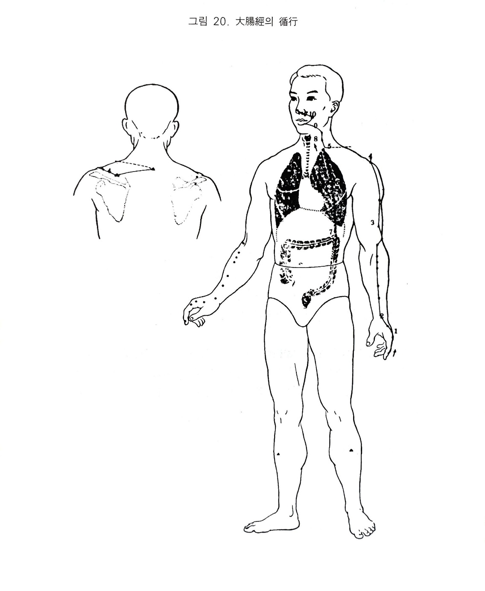

수양명대장경
8. 수양명대장경
1) 수양명대장경의 순행
수양명대장경은 폐경의 열결에서 분지되어 차지단으로 이어진 상양에서 시작되어 식지의 상렴을 따라 합곡으 양골을 지나 전완의 외측을 거쳐 상생하고 주관절의 곡지로 들어가 상완의 외측전면을 따라 견관절의 전상방으로 가서 삼초경의 노회와 교차된다. 상행하여 수태양경이 예풍과 교회한 후에 배부의 독맥의 대추와 교회한다. 전면으로 돌아와 결분(위경)에 교회하고 직행내입한 후 상행하여 폐장과 연락되고, 횡경막을 통과하여 대장에 속한다.
하나의 지맥은 결분에서 경협을 통과해서 하치에 치근으로 들어가 다시 나와 구진을 끼고 위경의 지창을 지나 코밑 인중에서 교차 상회한다. 이리하여 조측의 경맥은 우측으로 순행하고, 우측의 경맥은 좌측으로 운행하여 비공을 끼고 영향에서 끝난다.
2) 대장경의 병증
(1) 호흡기계
대장기가 허약해지면 폐기도 허약해지니 추워 떨게 된다.
폐와 대장은 표리관계가 되니, 실열이 있으면 신열. 천해한다.
(2) 소화기계
소장은 소화되어 내려온 영양분의 찌꺼기를 수분과 조박을 나누며, 대장은 그 아래에서 이 조박을 전도하는 역할을 한다.
대장경이 상박을 지나 결분에서 위경과 교회하고 곧 바로 내려가 폐를 지나 다시 위 주위를 거쳐 대장에 속해 있다. 그러므로 병사가 침입하면 혹은 식욕이 없고 구토도 하며 배가 부르고 배에서 꾸르륵 소리가 나며 소화되지 않은 음식물을 설사하고, 대장에 내열이 있으면 목황. 변혈한다.
실열이 있으면 제복이 장통하고 변비가 발생하며, 혹은 황색의 점액변이 나오기도 한다. 습열이 안에 맺어지면 적백리질이 된다.
(3) 흉협복통류
대장은 전도지궁이니, 병이 나면 복호절통한다.
대장에 습열이 뭉쳐 염증이 생기면 맹장염과 같은 장옹이 생긴다.
(4) 운동기계
대장경이 차지단에서 시작하여 전완. 상완의 외측전면을 지나 견관절의 전상방을 거친 후 대추- 결분을 지나 경협에 이르니 이 경락상에서 모지. 차지(폐. 대장 표리관계로). 수완. 상박의 통증과 견비통. 경회전불능 등의 증상이 생기고 실열에 그 부위가 부으면서 열이 나기도 한다.
(5) 안이비인후구계
대장경락이 경협 - 하치 - 구진 - 비방으로 돌고 있어, 이곳에 병사가 침입하면 코가 막히고 콧물이 나며(폐. 대장이 규는 비) 입이 마르고 이가 아프며 인후가 붓는다.
허한하면 이가 시리고, 실열인 경우는 혀가 타고 입이 마르며 입안이 혈고 목이 막히며 충치가 생겨 아프다.
폐. 대장은 금이며 신은 수로서 모자관계이나, 대장(금)이 허약하면 신수가 약해져 그 규인 이의 영양 공급이 되지 않음으로 인해 이호. 이롱이 발생한다.
(6) 정신계
폐.대장이 약해지면 기허해지므로 전도를 못해 오랫동안 설사하여 몸이 마르게 된다.
(7) 기타
폐. 대장은 피모를 주관하니 울체된 기가 밖으로 몰리면 피부가 딱딱해 지고 아픈 것을 모르며, 항문은 대장의 끝이니 허하면 근이 무력해서 탈홍되고, 습열이 모이면 치루가 된다. 대장경락이 얼굴에 분포되니 실열로 면적한다.

오수혈
상양(정,금)
둘째 손가락 손톱의 뿌리부분 각진 곳에서 엄지 쪽으로 1푼 떨어진 곳이다. 감기 들었을 때의 발열, 편도선염, 뇌충혈, 천식, 치통, 입병 이호증 등에 쓰이나 목구멍이 아플 때 삼릉침으로 사혈하면 잘 듣는다.
이간(형,수)
둘째 손가락의 내측 즉 엄지쪽 백욱제를 밀고가면 본관절 조금 앞에 뼈의 돌기가 만져지니 돌기앞의 함중이 혈이다. 치통 등에 특효가 있고 편도선염, 뉵혈 음식의 연하가 잘 안되거나 소화가 안될 때 구안와사, 견배통 등에 쓰인다.
삼간(수,목)
둘째 손가락의 본관절내측 후함중이니 둘째 손바닥뼈의 엄지쪽을 밀어 내려가면 본관절의 뒷쪽에 함중이 있으니 그곳이 삼간혈이다. 헛배가 부른 복만증, 배가 끓는 설사, 치통, 안질 어깨나 등이 아픈 견배통, 편도선염이나 호흡곤란 등에 쓰인다.
양계(경,화)
완골과 엄지의 윗쪽의 수근골의 사이이며 장단모지신근의 사이가 되므로 다섯손가락을 확 펴면 완골 끝부분에 함몰된 근골의 사이가 혈자리이다. 금경중의 화혈이므로 화경의 영향으로 대장경에 이상이 생겼거나 대.소장경에 같이 변화가 있을 때 쓰여지는 오행혈이며 일반적으로는 두통, 이호증,
난청, 안질, 편도선염, 히스테리 증세 외에 팔으 완골신경통 등에 쓰인다.
곡지(합,토)
팔을 구부리는데 손바닥을 반대편 가슴에 대고 팔꿈치 안쪽의 주름살 끝이 곡지혈이 된다. 사관혈이나 곡지 하삼혈은 통기경맥으로 전신조절이 되는 혈로서 뇌빈혈. 뇌충혈을 비롯하여 혈압조정이 가능하므로 중풍에방혈로서도 좋은 혈이며 반신불수나 팔의 신경통이나 마비 등에도 요혈에 속한다.
편도선염이나 전광 등의 정신병, 피부질환, 폐결핵이나 해수병 등 호흡기질환에도 유효한 혈이다.